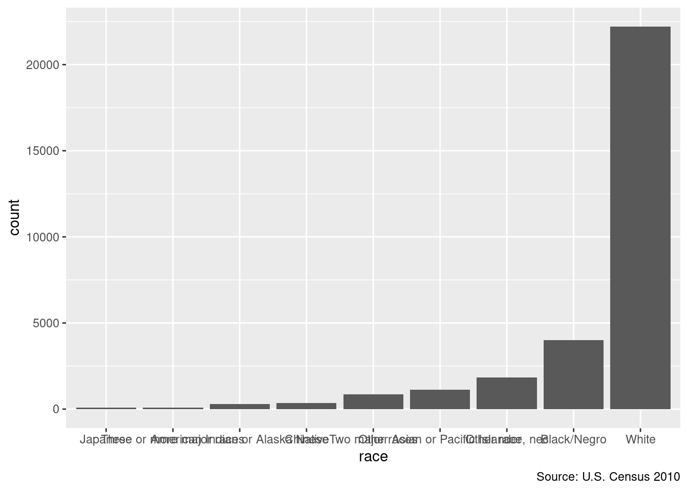

library(dplyr)
library(readr)
library(haven)
library(ggplot2)10 Objects, Functions, Loops
Where are we? Where are we headed?
Up till now, you should have covered:
- R basic programming
- Data Import
- Statistical Summaries
- Visualization
Today we’ll cover
- Objects
- Functions
- Loops
10.1 What is an object?
Now that we have covered some hands-on ways to use graphics, let’s go into some fundamentals of the R language.
Let’s first set up
cen10 <- read_csv("data/input/usc2010_001percent.csv", col_types = cols())Objects are abstract symbols in which you store data. Here we will create an object from copy, and assign cen10 to it.
copy <- cen10 This looks the same as the original dataset:
copy# A tibble: 30,871 × 4
state sex age race
<chr> <chr> <dbl> <chr>
1 New York Female 8 White
2 Ohio Male 24 White
3 Nevada Male 37 White
4 Michigan Female 12 White
5 Maryland Female 18 Black/Negro
6 New Hampshire Male 50 White
7 Iowa Female 51 White
8 Missouri Female 41 White
9 New Jersey Male 62 White
10 California Male 25 White
# ℹ 30,861 more rowsWhat happens if you do this next?
copy <- ""It got reassigned:
copy[1] ""10.1.1 Lists
Lists are one of the most generic and flexible type of object. You can make an empty list by the function list()
my_list <- list()
my_listlist()And start filling it in. Slots on the list are invoked by double square brackets [[]]
my_list[[1]] <- "contents of the first slot -- this is a string"
my_list[["slot 2"]] <- "contents of slot named slot 2"
my_list[[1]]
[1] "contents of the first slot -- this is a string"
$`slot 2`
[1] "contents of slot named slot 2"each slot can be anything. What are we doing here? We are defining the 1st slot of the list my_list to be a vector c(1, 2, 3, 4, 5)
my_list[[1]] <- c(1, 2, 3, 4, 5)
my_list[[1]]
[1] 1 2 3 4 5
$`slot 2`
[1] "contents of slot named slot 2"You can even make nested lists. Let’s say we want the 1st slot of the list to be another list of three elements.
my_list[[1]][[1]] <- "subitem 1 in slot 1 of my_list"
my_list[[1]][[2]] <- "subitem 1 in slot 2 of my_list"
my_list[[1]][[3]] <- "subitem 1 in slot 3 of my_list"
my_list[[1]]
[1] "subitem 1 in slot 1 of my_list" "subitem 1 in slot 2 of my_list"
[3] "subitem 1 in slot 3 of my_list" "4"
[5] "5"
$`slot 2`
[1] "contents of slot named slot 2"10.2 Making your own objects
We’ve covered one type of object, which is a list. You saw it was quite flexible. How many types of objects are there?
There are an infinite number of objects, because people make their own class of object. You can detect the type of the object (the class) by the function class
Object can be said to be an instance of a class.
Analogies:
class - Pokemon, object - Pikachu
class - Book, object - To Kill a Mockingbird
class - DataFrame, object - 2010 census data
class - Character, object - “Programming is Fun”
What is type (class) of object is cen10?
class(cen10)[1] "spec_tbl_df" "tbl_df" "tbl" "data.frame" What about this text?
class("some random text")[1] "character"To change or create the class of any object, you can assign it. To do this, assign the name of your class to character to an object’s class().
We can start from a simple list. For example, say we wanted to store data about pokemon. Because there is no pre-made package for this, we decide to make our own class.
pikachu <- list(name = "Pikachu",
number = 25,
type = "Electric",
color = "Yellow")and we can give it any class name we want.
class(pikachu) <- "Pokemon"
str(pikachu)List of 4
$ name : chr "Pikachu"
$ number: num 25
$ type : chr "Electric"
$ color : chr "Yellow"
- attr(*, "class")= chr "Pokemon"pikachu$type[1] "Electric"We can even define class-specific methods. For example, the summary() function is commonly used to summarize the output of a particular object (such as an lm() regression object). However, summary() will behave differently depending on what object you give it. Why? Because there is a version of summary defined specifically for lm() objects. Let’s define a summary() method for the Pokemon class
# Input: an object of class "Pokemon"
# Output: A text summary of the Pokemon
summary.Pokemon <- function(x){
out_text <- paste(x$name, " is a(n) ", x$type,
" type Pokemon. Its PokeDex number is ",
x$number, ". It is ", x$color, ".\n", sep="")
cat(out_text)
}Now let’s call the generic summary() function on pikachu
summary(pikachu)Pikachu is a(n) Electric type Pokemon. Its PokeDex number is 25. It is Yellow.10.2.1 Seeing R through objects
Most of the R objects that you will see as you advance are their own objects. For example, here’s a linear regression object
ols <- lm(mpg ~ wt + vs + gear + carb, mtcars)
class(ols)[1] "lm"Anything can be an object! Even graphs (in ggplot) can be assigned, re-assigned, and edited.
grp_race <- group_by(cen10, race)%>%
summarize(count = n())
grp_race_ordered <- arrange(grp_race, count) %>%
mutate(race = forcats::as_factor(race))
gg_tab <- ggplot(data = grp_race_ordered) +
aes(x = race, y = count) +
geom_col() +
labs(caption = "Source: U.S. Census 2010")
gg_tab
You can change the orientation
gg_tab<- gg_tab + coord_flip()10.2.2 Parsing an object by str()s
It can be hard to understand an R object because it’s contents are unknown. The function str, short for structure, is a quick way to look into the innards of an object
str(my_list)List of 2
$ : chr [1:5] "subitem 1 in slot 1 of my_list" "subitem 1 in slot 2 of my_list" "subitem 1 in slot 3 of my_list" "4" ...
$ slot 2: chr "contents of slot named slot 2"class(my_list)[1] "list"Same for the object we just made
str(pikachu)List of 4
$ name : chr "Pikachu"
$ number: num 25
$ type : chr "Electric"
$ color : chr "Yellow"
- attr(*, "class")= chr "Pokemon"What does a ggplot object look like? Very complicated, but at least you can see it:
# enter this on your console
str(gg_tab)10.3 Types of variables
In the social science we often analyze variables. As you saw in the tutorial, different types of variables require different care.
A key link with what we just learned is that variables are also types of R objects.
10.3.1 scalars
One number. How many people did we count in our Census sample?
nrow(cen10)[1] 30871Question: What proportion of our census sample is Native American? This number is also a scalar
# Enter yourself
unique(cen10$race)[1] "White" "Black/Negro"
[3] "Other race, nec" "American Indian or Alaska Native"
[5] "Chinese" "Other Asian or Pacific Islander"
[7] "Two major races" "Three or more major races"
[9] "Japanese" mean(cen10$race == "American Indian or Alaska Native")[1] 0.009555894Hint: you can use the function mean() to calcualte the sample mean. The sample proportion is the mean of a sequence of number, where your event of interest is a 1 (or TRUE) and others are 0 (or FALSE).
10.3.2 numeric vectors
A sequence of numbers.
grp_race_ordered$count[1] 77 88 295 354 869 1129 1839 4013 22207class(grp_race_ordered$count)[1] "integer"Or even, all the ages of the millions of people in our Census. Here are just the first few numbers of the list.
head(cen10$age)[1] 8 24 37 12 18 5010.3.3 characters (aka strings)
This can be just one stretch of characters
my_name <- "Anton"
my_name[1] "Anton"class(my_name)[1] "character"or more characters. Notice here that there’s a difference between a vector of individual characters and a length-one object of characters.
my_name_letters <- c("A","n","t","o","n")
my_name_letters[1] "A" "n" "t" "o" "n"class(my_name_letters)[1] "character"Finally, remember that lower vs. upper case matters in R!
my_name2 <- "anton"
my_name == my_name2[1] FALSE10.4 What is a function?
Most of what we do in R is executing a function. read_csv(), nrow(), ggplot() .. pretty much anything with a parentheses is a function. And even things like <- and [ are functions as well.
A function is a set of instructions with specified ingredients. It takes an input, then manipulates it – changes it in some way – and then returns the manipulated product.
One way to see what a function actually does is to enter it without parentheses.
# enter this on your console
tableYou’ll see below that the most basic functions are quite complicated internally.
You’ll notice that functions contain other functions. wrapper functions are functions that “wrap around” existing functions. This sounds redundant, but it’s an important feature of programming. If you find yourself repeating a command more than two times, you should make your own function, rather than writing the same type of code.
10.4.1 Write your own function
It’s worth remembering the basic structure of a function. You create a new function, call it my_fun by this:
my_fun <- function() {
}If we wanted to generate a function that computed the number of men in your data, what would that look like?
count_men <- function(data) {
nmen <- sum(data$sex == "Male")
return(nmen)
}Then all we need to do is feed this function a dataset
count_men(cen10)[1] 15220The point of a function is that you can use it again and again without typing up the set of constituent manipulations. So, what if we wanted to figure out the number of men in California?
count_men(cen10[cen10$state == "California",])[1] 1876Let’s go one step further. What if we want to know the proportion of non-whites in a state, just by entering the name of the state? There’s multiple ways to do it, but it could look something like this
nw_in_state <- function(data, state) {
s.subset <- data[data$state == state,]
total.s <- nrow(s.subset)
nw.s <- sum(s.subset$race != "White")
nw.s / total.s
}The last line is what gets generated from the function. To be more explicit you can wrap the last line around return(). (as in return(nw.s/total.s). return() is used when you want to break out of a function in the middle of it and not wait till the last line.
Try it on your favorite state!
nw_in_state(cen10, "Massachusetts")[1] 0.2040185Checkpoint
1
Try making your own function, average_age_in_state, that will give you the average age of people in a given state.
# Enter on your own2
Try making your own function, asians_in_state, that will give you the number of Chinese, Japanese, and Other Asian or Pacific Islander people in a given state.
# Enter on your own3
Try making your own function, ‘top_10_oldest_cities’, that will give you the names of cities whose population’s average age is top 10 oldest.
# Enter on your own10.5 What is a package?
You can think of a package as a suite of functions that other people have already built for you to make your life easier.
help(package = "ggplot2")To use a package, you need to do two things: (1) install it, and then (2) load it.
Installing is a one-time thing
install.packages("ggplot2")But you need to load each time you start a R instance. So always keep these commands on a script.
library(ggplot2)10.6 Conditionals
Sometimes, you want to execute a command only under certain conditions. This is done through the almost universal function, if(). Inside the if function we enter a logical statement. The line that is adjacent to, or follows, the if() statement only gets executed if the statement returns TRUE.
For example,
For example,
x <- 5
if (x >0) {
print("positive number")
} else if (x == 0) {
print ("zero")
} else {
print("negative number")
}[1] "positive number"You can wrap that whole things in a function
is_positive <- function(number) {
if (number >0) {
print("positive number")
} else if (number == 0) {
print ("zero")
} else {
print("negative number")
}
}
is_positive(5)[1] "positive number"is_positive(-3)[1] "negative number"10.7 For-loops
Loops repeat the same statement, although the statement can be “the same” only in an abstract sense. Use the for(x in X) syntax to repeat the subsequent command as many times as there are elements in the right-hand object X. Each of these elements will be referred to the left-hand index x
First, come up with a vector.
fruits <- c("apples", "oranges", "grapes")Now we use the fruits vector in a for loop.
for (fruit in fruits) {
print(paste("I love", fruit))
}[1] "I love apples"
[1] "I love oranges"
[1] "I love grapes"Here for() and in must be part of any for loop. The right hand side fruits must be a thing that exists. Finally the left-hand side object is “Pick your favor name.” It is analogous to how we can index a sum with any letter. \(\sum_{i=1}^{10}i\) and sum_{j = 1}^{10}j are in fact the same thing.
for (i in 1:length(fruits)) {
print(paste("I love", fruits[i]))
}[1] "I love apples"
[1] "I love oranges"
[1] "I love grapes"states_of_interest <- c("California", "Massachusetts", "New Hampshire", "Washington")
for( state in states_of_interest){
state_data <- cen10[cen10$state == state,]
nmen <- sum(state_data$sex == "Male")
n <- nrow(state_data)
men_perc <- round(100*(nmen/n), digits=2)
print(paste("Percentage of men in",state, "is", men_perc))
}[1] "Percentage of men in California is 49.85"
[1] "Percentage of men in Massachusetts is 47.6"
[1] "Percentage of men in New Hampshire is 48.55"
[1] "Percentage of men in Washington is 48.19"Instead of printing, you can store the information in a vector
states_of_interest <- c("California", "Massachusetts", "New Hampshire", "Washington")
male_percentages <- c()
iter <-1
for( state in states_of_interest){
state_data <- cen10[cen10$state == state,]
nmen <- sum(state_data$sex == "Male")
n <- nrow(state_data)
men_perc <- round(100*(nmen/n), digits=2)
male_percentages <- c(male_percentages, men_perc)
names(male_percentages)[iter] <- state
iter <- iter + 1
}
male_percentages California Massachusetts New Hampshire Washington
49.85 47.60 48.55 48.19 10.8 Nested Loops
What if I want to calculate the population percentage of a race group for all race groups in states of interest? You could probably use tidyverse functions to do this, but let’s try using loops!
states_of_interest <- c("California", "Massachusetts", "New Hampshire", "Washington")
for (state in states_of_interest) {
for (race in unique(cen10$race)) {
race_state_num <- nrow(cen10[cen10$race == race & cen10$state == state, ])
state_pop <- nrow(cen10[cen10$state == state, ])
race_perc <- round(100*(race_state_num/(state_pop)), digits=2)
print(paste("Percentage of ", race , "in", state, "is", race_perc))
}
}[1] "Percentage of White in California is 57.61"
[1] "Percentage of Black/Negro in California is 6.72"
[1] "Percentage of Other race, nec in California is 15.55"
[1] "Percentage of American Indian or Alaska Native in California is 1.12"
[1] "Percentage of Chinese in California is 3.75"
[1] "Percentage of Other Asian or Pacific Islander in California is 9.54"
[1] "Percentage of Two major races in California is 4.62"
[1] "Percentage of Three or more major races in California is 0.37"
[1] "Percentage of Japanese in California is 0.72"
[1] "Percentage of White in Massachusetts is 79.6"
[1] "Percentage of Black/Negro in Massachusetts is 5.87"
[1] "Percentage of Other race, nec in Massachusetts is 4.02"
[1] "Percentage of American Indian or Alaska Native in Massachusetts is 0.77"
[1] "Percentage of Chinese in Massachusetts is 2.32"
[1] "Percentage of Other Asian or Pacific Islander in Massachusetts is 4.33"
[1] "Percentage of Two major races in Massachusetts is 2.78"
[1] "Percentage of Three or more major races in Massachusetts is 0"
[1] "Percentage of Japanese in Massachusetts is 0.31"
[1] "Percentage of White in New Hampshire is 93.48"
[1] "Percentage of Black/Negro in New Hampshire is 0.72"
[1] "Percentage of Other race, nec in New Hampshire is 0.72"
[1] "Percentage of American Indian or Alaska Native in New Hampshire is 0.72"
[1] "Percentage of Chinese in New Hampshire is 0.72"
[1] "Percentage of Other Asian or Pacific Islander in New Hampshire is 2.17"
[1] "Percentage of Two major races in New Hampshire is 0.72"
[1] "Percentage of Three or more major races in New Hampshire is 0"
[1] "Percentage of Japanese in New Hampshire is 0.72"
[1] "Percentage of White in Washington is 76.05"
[1] "Percentage of Black/Negro in Washington is 2.9"
[1] "Percentage of Other race, nec in Washington is 5.37"
[1] "Percentage of American Indian or Alaska Native in Washington is 2.03"
[1] "Percentage of Chinese in Washington is 1.31"
[1] "Percentage of Other Asian or Pacific Islander in Washington is 6.68"
[1] "Percentage of Two major races in Washington is 4.79"
[1] "Percentage of Three or more major races in Washington is 0.29"
[1] "Percentage of Japanese in Washington is 0.58"Exercises
Exercise 1: Write your own function
Write your own function that makes some task of data analysis simpler. Ideally, it would be a function that helps you do either of the previous tasks in fewer lines of code. You can use the three lines of code that was provided in exercise 1 to wrap that into another function too!
# Enter yourselfExercise 2: Using Loops
Using a loop, create a crosstab of sex and race for each state in the set “states_of_interest”
states_of_interest <- c("California", "Massachusetts", "New Hampshire", "Washington")
# Enter yourselfExercise 3: Storing information derived within loops in a global dataframe
Recall the following nested loop
states_of_interest <- c("California", "Massachusetts", "New Hampshire", "Washington")
for (state in states_of_interest) {
for (race in unique(cen10$race)) {
race_state_num <- nrow(cen10[cen10$race == race & cen10$state == state, ])
state_pop <- nrow(cen10[cen10$state == state, ])
race_perc <- round(100*(race_state_num/(state_pop)), digits=2)
print(paste("Percentage of ", race , "in", state, "is", race_perc))
}
}[1] "Percentage of White in California is 57.61"
[1] "Percentage of Black/Negro in California is 6.72"
[1] "Percentage of Other race, nec in California is 15.55"
[1] "Percentage of American Indian or Alaska Native in California is 1.12"
[1] "Percentage of Chinese in California is 3.75"
[1] "Percentage of Other Asian or Pacific Islander in California is 9.54"
[1] "Percentage of Two major races in California is 4.62"
[1] "Percentage of Three or more major races in California is 0.37"
[1] "Percentage of Japanese in California is 0.72"
[1] "Percentage of White in Massachusetts is 79.6"
[1] "Percentage of Black/Negro in Massachusetts is 5.87"
[1] "Percentage of Other race, nec in Massachusetts is 4.02"
[1] "Percentage of American Indian or Alaska Native in Massachusetts is 0.77"
[1] "Percentage of Chinese in Massachusetts is 2.32"
[1] "Percentage of Other Asian or Pacific Islander in Massachusetts is 4.33"
[1] "Percentage of Two major races in Massachusetts is 2.78"
[1] "Percentage of Three or more major races in Massachusetts is 0"
[1] "Percentage of Japanese in Massachusetts is 0.31"
[1] "Percentage of White in New Hampshire is 93.48"
[1] "Percentage of Black/Negro in New Hampshire is 0.72"
[1] "Percentage of Other race, nec in New Hampshire is 0.72"
[1] "Percentage of American Indian or Alaska Native in New Hampshire is 0.72"
[1] "Percentage of Chinese in New Hampshire is 0.72"
[1] "Percentage of Other Asian or Pacific Islander in New Hampshire is 2.17"
[1] "Percentage of Two major races in New Hampshire is 0.72"
[1] "Percentage of Three or more major races in New Hampshire is 0"
[1] "Percentage of Japanese in New Hampshire is 0.72"
[1] "Percentage of White in Washington is 76.05"
[1] "Percentage of Black/Negro in Washington is 2.9"
[1] "Percentage of Other race, nec in Washington is 5.37"
[1] "Percentage of American Indian or Alaska Native in Washington is 2.03"
[1] "Percentage of Chinese in Washington is 1.31"
[1] "Percentage of Other Asian or Pacific Islander in Washington is 6.68"
[1] "Percentage of Two major races in Washington is 4.79"
[1] "Percentage of Three or more major races in Washington is 0.29"
[1] "Percentage of Japanese in Washington is 0.58"Instead of printing the percentage of each race in each state, create a dataframe, and store all that information in that dataframe. (Hint: look at how I stored information about male percentage in each state of interest in a vector.)
Module originally written by Shiro Kuriwaki, Connor Jerzak, and Yon Soo Park↩︎
Special thanks to Shiro Kuriwaki and Yon Soo Park for developing the original module↩︎
Special thanks to Shiro Kuriwaki for developing the original version of this tutorial↩︎
Special thanks to Shiro Kuriwaki and Yon Soo Park for developing the original module↩︎
Module originally written by Shiro Kuriwaki, Connor Jerzak, and Yon Soo Park↩︎
Module originally written by Connor Jerzak and Shiro Kuriwaki↩︎